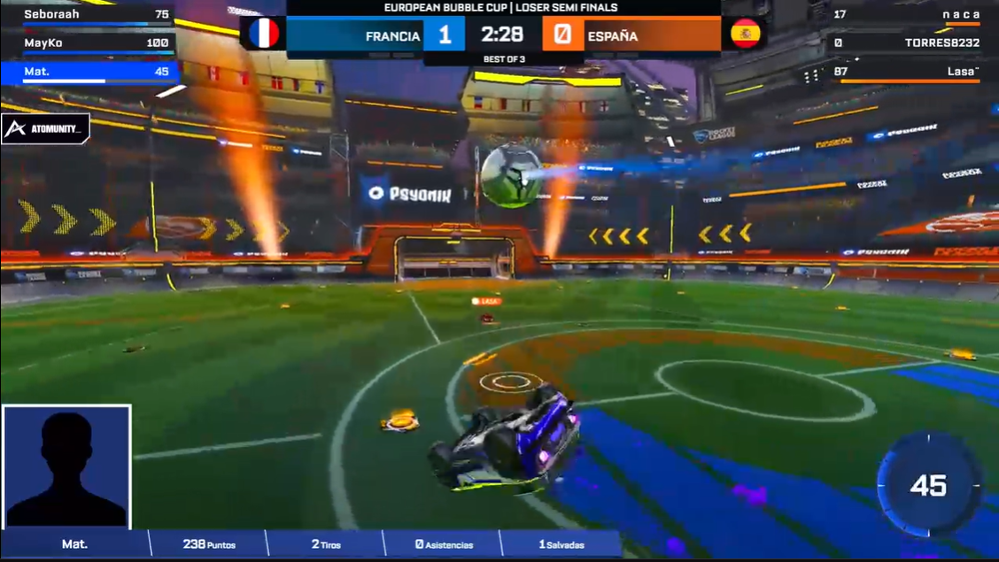
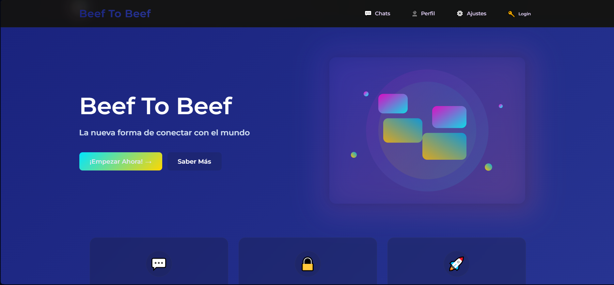

Desarrollo de interfaces web modernas y responsivas

Si eres streamer de Rocket League, este proyecto es para ti. Este overlay te permitirá ver los kills, asistencias, muertes y más de tu partida en tiempo real, todo ello a la vez que transmities tu partida.
Si eres organizador de torneos de Rocket league con este overlay puedes personalizar para que se vea tu marca y tambien ves datos a tiempo real. Con el control panel te puedes controlar todo el overlay de forma muy facil.

Si quieres preguntar alguna cosa y eres timido y te da miedo preguntar con este chat no sobran quien es el que hace la pregunta